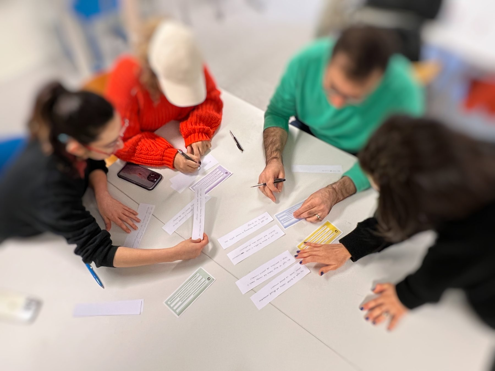

MASTER THESIS · UX/UI · 2024
HarmonyHome
A roommate-matching concept designed to make shared living more compatible by considering personality, lifestyle preferences and communication styles—not only rooms and locations.

01 · THE CHALLENGE
Finding a room is only half the problem.
Shared living can break down when roommates have incompatible personalities, routines, cleanliness expectations or communication styles. The project explored how a roommate-matching service could surface compatibility before people decide to live together.
People wanted a better sense of personality, interests and lifestyle before committing.
Different expectations around shared spaces were a recurring source of concern.
Study, work and sleep routines can create friction when expectations are unclear.
02 · RESEARCH
Understanding what “compatible” actually means.
I conducted semi-structured interviews with young adults about shared-living experiences and roommate selection. The findings pointed toward personality compatibility, lifestyle preferences, cleanliness habits and communication as important factors.
Competitive audit
I reviewed roommate and housing platforms including Swedish and international services. A recurring gap was limited information about the people already living in a home and little support for matching based on personality or lifestyle.
From insight to structure
The research informed personas, an empathy map, user journey, user flows and the information users would need in both roommate and accommodation profiles.



03 · DESIGN & TESTING
Making compatibility visible and actionable.
The high-fidelity concept let users create detailed profiles, explore potential matches, search for rooms or roommates with filters and maps, and communicate through messaging. Preference icons and profile information were designed to support faster comparison.


What testing changed
Two similar save buttons caused confusion, so they were merged into a single “Save” action.
The home experience was refined to surface information based on preferences set during account creation.
The concept was adjusted to allow more than one social connection, supporting richer compatibility signals.
Testing exposed unclear labels and navigation points, which guided interface refinements.


04 · ACCESSIBILITY & LEARNING
Designing beyond the happy path.
The concept included language selection during onboarding and a high-contrast visual mode. The project reinforced the value of testing assumptions early and of combining design research with perspectives from psychology and sociology when a product depends on human compatibility.
Next step
A future version could validate the matching questionnaire with domain experts and test how different matching signals affect trust, privacy and perceived accuracy.